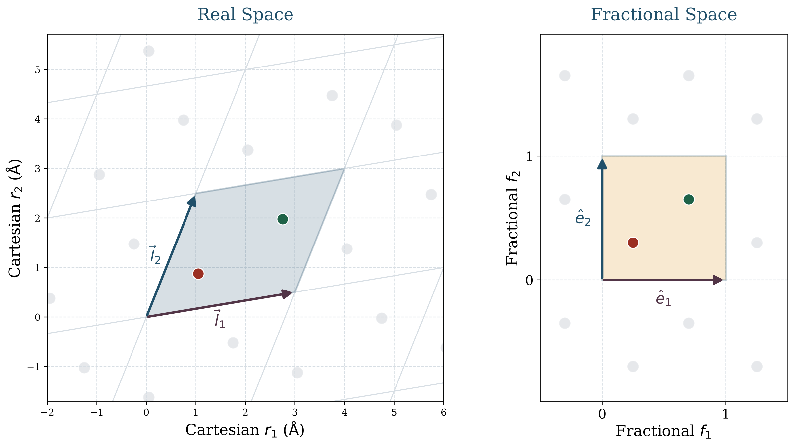
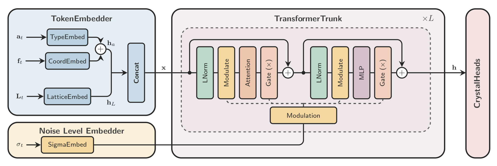
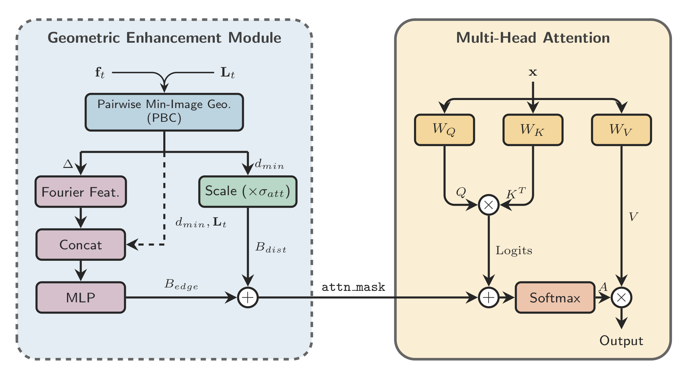
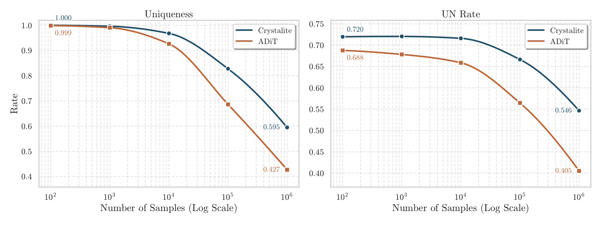

Generative modeling of crystals
Discovering new crystalline materials remains a difficult search problem and a central challenge in modern materials discovery [1]. The number of possible compositions and structures is enormous, while only a small fraction of candidates are thermodynamically competitive. Traditional structure-search strategies such as AIRSS and evolutionary crystal structure prediction can explore this space systematically [2, 3, 4]. In principle, first-principles calculations can assess whether a proposed material is meaningful. In practice, this quickly becomes too costly if the objective is broad exploration rather than detailed validation of a small set of structures.
Generative models are therefore attractive because they can learn to propose candidate crystals directly from data. However, crystal generation is not simply a matter of predicting discrete atom labels. Atoms occupy positions inside a periodic lattice, distances wrap across unit-cell boundaries, and small geometric errors can change the physical plausibility of a structure. This is the main reason why much of the recent literature has relied on geometry-aware and often equivariant graph neural networks [5, 6, 8, 9, 10].
Crystalite begins from a narrower question: how much of this geometric structure must be built into the backbone itself? Put differently, can a diffusion Transformer remain competitive if the inductive bias is placed more carefully? Recent diffusion-transformer results suggest that lighter backbones can indeed be competitive when the representation and geometry are handled well [10, 11].
Equivariant GNNs for crystal modeling
A crystal is naturally described by three coupled objects: atom identities \( \mathbf{A} \), fractional coordinates \( \mathbf{F} \), and lattice geometry \( \mathbf{L} \):
An important observation is that fractional coordinates should not be regarded as Cartesian coordinates in another form. A row of \( \mathbf{F} \) specifies the position of an atom within the unit cell relative to the lattice basis, whereas \( \mathbf{L} \) specifies the lattice basis itself in real space. As a result, the same fractional arrangement can correspond to substantially different Cartesian structures under different lattices, and real-space positions are only well defined when \( \mathbf{F} \) and \( \mathbf{L} \) are considered jointly.

This representation immediately explains why the problem is specialized. The unit cell is repeated periodically in all directions. Local environments matter, but only through the lattice that defines how the crystal repeats in real space. Geometric relations must be computed under the minimum-image convention rather than inside an isolated box.
Equivariant GNNs are well matched to this setting. They are designed to process neighborhoods, distances, directions, and symmetry transformations in a controlled way, which has enabled strong results in both crystal structure prediction and crystal generation. At the same time, incorporating equivariance in this way can make the resulting models architecturally complex and relatively slow at sampling time, when the denoiser must be evaluated repeatedly. Representative examples include CDVAE, DiffCSP, FlowMM, MatterGen, and OMatG [5, 6, 7, 8, 9].
Crystalite does not argue that geometry can be ignored. Rather, it asks whether geometry can be introduced in a more economical way. The model retains a standard diffusion Transformer backbone and concentrates its crystal-specific structure in the representation and the attention mechanism.
Chemistry-based atom encoding
The first modification concerns atom identity. In many crystal generators, atom types are represented by one-hot vectors. This is convenient, but chemically it is a poor geometry: every element is orthogonal to every other element. Sodium is no closer to lithium than it is to xenon.
This matters especially when diffusion is formulated over a continuous atom-type signal rather than with an explicitly discrete diffusion process. In that setting, one-hot atom identity provides no notion of chemical proximity: nearby vectors in representation space do not correspond to chemically similar elements, and chemically plausible substitutions are not encoded in the representation.
Crystalite replaces one-hot atom identity with Subatomic Tokenization, a compact descriptor built from periodic and electronic structure: period, group, block, and valence-shell occupancy. This gives the atom representation a more chemically meaningful structure.
In a simplified form, the token for element \(k\) can be written as
These descriptors are standardized, balanced across feature groups, optionally PCA-compressed, and then treated as continuous atom tokens. During sampling, a predicted token is decoded back to a valid element by nearest-token matching. This makes the denoising problem better aligned with chemical structure: nearby errors in token space correspond more naturally to chemically related species.
These are the three continuous channels denoised jointly by the model: atom tokens \( \mathbf{H} \), fractional coordinates \( \mathbf{F} \), and a compact latent description of the lattice \( \mathbf{y} \).
Geometry-aware attention with GEM
The second key design choice concerns geometry. Crystals are periodic objects, so geometric quantities should respect the torus structure of fractional coordinates. The subtle point is that Crystalite uses two closely related constructions here: a wrapped fractional residual for the coordinate loss, and a metric-aware periodic-image search for the geometry-aware attention module introduced below.
This wrapped residual is the right object for the coordinate loss because the model predicts fractional coordinates directly. For the geometry-aware attention bias, the goal is slightly different: we want the shortest periodic displacement under the lattice metric, not just a componentwise wrap. In practice, the model searches over a small set of nearby periodic images and keeps the one with the smallest real-space norm:
For orthogonal cells these two notions coincide, but for skewed lattices they do not have to. That is why the paper distinguishes between wrapped fractional residuals in the loss and metric-aware minimum-image geometry in the attention module. The backbone itself is still intentionally simple: one token per atom, one additional global token for the lattice, and a standard diffusion-conditioned Transformer trunk.

This gives the model a clean decomposition between local atomic information and global cell information. The lattice is parameterized through a lower-triangular latent, which keeps the representation unconstrained while ensuring positive diagonal entries:
The geometry-specific piece of this backbone is the Geometric Enhancement Module (GEM). GEM computes periodic pairwise features from atom positions and the lattice, then feeds them into attention as a bias rather than replacing the Transformer with a heavier message-passing architecture.
Concretely, GEM adds a geometry-dependent bias directly to the attention logits:

The bias term \(B_{\mathrm{geom}}\) is built from periodic pairwise geometry: metric-aware minimum-image displacements, normalized distances, Fourier or radial features, and a compact lattice descriptor. The resulting attention is still standard self-attention, but it is informed by crystal geometry at the point where token interactions are decided.
This is the central modeling idea. Crystalite does not attempt to remove geometric inductive bias. Instead, it introduces a softer and more modular form of that bias inside the attention mechanism.
Crystal structure prediction and de novo generation results
We evaluate Crystalite in two settings. In crystal structure prediction (CSP), the composition is known and the model predicts the structure. In de novo generation, the model generates atom types, coordinates, and lattice jointly from noise.
Crystal structure prediction
The CSP results are particularly direct. Across the reported benchmarks, Crystalite achieves the strongest results in both match rate and RMSE. The RMSE improvements are especially notable, because they suggest better geometric refinement rather than merely better recovery of the correct structural mode.
| Model | MP-20 | MPTS-52 | Alex-MP-20 | |||
|---|---|---|---|---|---|---|
| MR ↑ | RMSE ↓ | MR ↑ | RMSE ↓ | MR ↑ | RMSE ↓ | |
| CDVAE | 33.90 | 0.1045 | 5.34 | 0.2106 | -- | -- |
| DiffCSP | 51.49 | 0.0631 | 12.19 | 0.1786 | -- | -- |
| FlowMM | 61.39 | 0.0566 | 17.54 | 0.1726 | -- | -- |
| CrystalFlow | 62.02 | 0.0710 | 22.71 | 0.1548 | -- | -- |
| KLDM | 65.83 | 0.0517 | 23.93 | 0.1276 | -- | -- |
| OMatG | 63.75 | 0.0720 | 25.15 | 0.1931 | 64.71 | 0.1251 |
| Crystalite | 66.05 | 0.0329 | 31.49 | 0.0701 | 67.52 | 0.0335 |
CSP results across the three reported benchmarks. The strongest gains appear in RMSE, which is consistent with GEM primarily improving geometric refinement.
This interpretation matches the ablations in the paper: GEM has only a modest effect on match rate, but it consistently improves structural accuracy.
De novo generation
The de novo generation setting is more nuanced, because validity, novelty, uniqueness, and stability pull in different directions. For that reason, the most informative summary target is often S.U.N., which rewards structures that are simultaneously stable, unique, and novel. On this benchmark, Crystalite achieves the strongest S.U.N. result while remaining substantially faster than competing baselines.
| Model | Quality and Diversity | Stability, Distribution, and Speed | ||||||||
|---|---|---|---|---|---|---|---|---|---|---|
| Struct. Val. ↑ | Comp. Val. ↑ | Unique ↑ | Novel ↑ | U.N. ↑ | Stable ↑ | S.U.N. ↑ | wdist-ρ ↓ | wdist N-ary ↓ | Time / 1k ↓ | |
| FlowMM | 93.03 | 83.15 | 97.44 | 85.00 | 83.99 | 46.05 | 31.64 | 1.389 | 0.075 | 1560 |
| CrystalDiT | 77.82 | 67.28 | 90.88 | 59.33 | 56.86 | 83.41 | 41.70 | 0.202 | 0.171 | 73.72 |
| DiffCSP | 99.93 | 82.10 | 96.90 | 89.53 | 87.89 | 50.28 | 38.60 | 0.192 | 0.344 | 237 |
| MatterGen | 99.78 | 83.72 | 98.10 | 91.14 | 90.26 | 51.70 | 42.29 | 0.088 | 0.184 | 2639 |
| ADiT | 99.52 | 90.15 | 90.25 | 59.80 | 56.91 | 76.90 | 36.76 | 0.231 | 0.089 | 84.81 |
| Crystalite | 99.61 | 81.94 | 95.33 | 79.15 | 77.12 | 70.97 | 48.55 | 0.046 | 0.125 | 22.36 / 5.14† |
Main de novo generation results on 10,000 generated crystals, with stability-related metrics estimated using NequIP. In this evaluation, Crystalite achieves the strongest S.U.N. result while also being the fastest sampler by a large margin. The daggered timing denotes an optimized inference setting with FlashAttention and bfloat16.
External benchmarking: LeMat GenBench
We also evaluate Crystalite on LeMat GenBench [12], an external benchmark that is separate from our own evaluation. This provides an additional check that the main conclusions are not specific to a single benchmark. The pre-relaxed and non-pre-relaxed groups should be read within their own categories. On this benchmark, Crystalite achieves state-of-the-art results on most metrics, and particularly on SUN and MSUN.
| Model | Valid | Unique | Novel | Stable | Metastable | SUN | MSUN | E Above Hull | Relax. RMSD |
|---|---|---|---|---|---|---|---|---|---|
| (%) ↑ | (%) ↑ | (%) ↑ | (%) ↑ | (%) ↑ | (%) ↑ | (%) ↑ | (eV) ↓ | (Å) ↓ | |
| Pre-Relaxed Models | |||||||||
| Crystalite | 97.20 | 95.80 | 53.20 | 12.70 | 51.60 | 1.50 | 22.60 | 0.0905 | 0.1320 |
| OMatG | 96.40 | 95.20 | 51.20 | 11.60 | 49.80 | 1.00 | 18.00 | 0.0956 | 0.0759 |
| MatterGen | 95.70 | 95.10 | 70.50 | 2.00 | 33.40 | 0.20 | 15.00 | 0.1834 | 0.3878 |
| PLaID++ | 96.00 | 77.80 | 24.20 | 12.40 | 60.70 | 1.00 | 7.60 | 0.0854 | 0.1286 |
| WyFormer-DFT | 95.20 | 95.00 | 66.40 | 3.70 | 24.80 | 0.40 | 7.80 | 0.2708 | 0.4173 |
| WyFormer | 93.40 | 93.00 | 66.40 | 0.50 | 15.70 | 0.10 | 1.90 | 0.4988 | 0.8121 |
| Non-Pre-Relaxed Models | |||||||||
| DiffCSP | 95.70 | 94.80 | 66.20 | 2.30 | 29.80 | 0.10 | 8.50 | 0.2747 | 0.3794 |
| DiffCSP++ | 95.30 | 95.10 | 62.00 | 1.00 | 26.40 | 0.20 | 5.00 | 0.4093 | 0.6933 |
| SymmCD | 73.40 | 73.00 | 47.00 | 1.40 | 18.60 | 0.10 | 2.40 | 0.8761 | 0.8720 |
| CrystalFormer | 69.90 | 69.40 | 31.80 | 1.40 | 28.80 | 0.00 | 3.10 | 0.7039 | 0.6585 |
| ADiT | 90.60 | 87.80 | 26.00 | 0.40 | 36.50 | 0.00 | 1.00 | 0.3333 | 0.3794 |
| Crystal-GFN | 51.70 | 51.70 | 51.70 | 0.00 | 0.00 | 0.00 | 0.00 | 2.0858 | 1.8665 |
LeMat GenBench results, shown separately for pre-relaxed and non-pre-relaxed models. Within the pre-relaxed group, Crystalite leads on validity, uniqueness, stable rate, SUN, and MSUN.
Large-scale generation

A good generative model should not only produce plausible samples, but continue to generate diverse candidates as the sampling budget grows. Evaluating that behavior at scale is only practical when generation is fast enough to make such studies feasible in the first place. This is exactly where Crystalite is useful: it is fast enough for large-scale generation, while preserving uniqueness and unique-and-novel rate more effectively as more crystals are sampled.
Balancing efficiency and expressivity
Crystalite shows that strong crystal generation does not require pushing all of the geometric inductive bias into a heavy backbone. Instead, chemical structure can be encoded in the atom representation, while periodic geometry can be placed where it matters most: in the loss and in attention through GEM.
In practice, that gives a useful balance: Crystalite remains easier to train, sample from, and extend than many geometry-heavy alternatives while still reaching state-of-the-art crystal structure prediction results and strong de novo generation performance. In the main generation comparison, it also achieves the highest S.U.N. score while sampling one to two orders of magnitude faster than leading GNN-based baselines, depending on the reference model and inference setting.
That speed matters for more than runtime alone. Fast sampling makes conditional generation, guidance, and steering much easier to use in practice, because adding search loops or external constraints no longer multiplies an already expensive denoising cost. In that sense, Crystalite is not only an efficient generator, but also a more practical foundation for controllable and scalable materials discovery workflows.
Selected references
- Merchant et al. (2023). Scaling deep learning for materials discovery. Nature.
- Pickard and Needs (2011). Ab initio random structure searching. Journal of Physics: Condensed Matter.
- Oganov and Glass (2006). Crystal structure prediction using ab initio evolutionary techniques. The Journal of Chemical Physics.
- Oganov et al. (2019). Structure prediction drives materials discovery. Nature Reviews Materials.
- Xie et al. (2021). Crystal Diffusion Variational Autoencoder for Periodic Material Generation.
- Jiao et al. (2024). Crystal Structure Prediction by Joint Equivariant Diffusion.
- Miller et al. (2024). FlowMM: generating materials with Riemannian flow matching. ICML.
- Hoellmer et al. (2025). Open Materials Generation with Stochastic Interpolants.
- Zeni et al. (2025). A Generative Model for Inorganic Materials Design. Nature.
- Joshi et al. (2025). All-atom Diffusion Transformers: Unified generative modelling of molecules and materials.
- Yi et al. (2025). CrystalDiT: A Diffusion Transformer for Crystal Generation.
- Betala et al. (2026). LeMat-GenBench: A Unified Evaluation Framework for Crystal Generative Models.